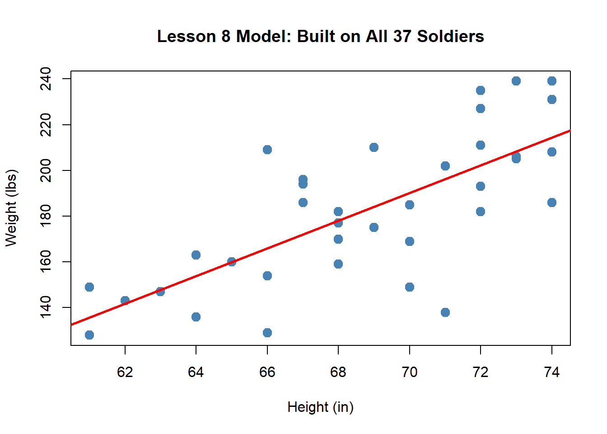
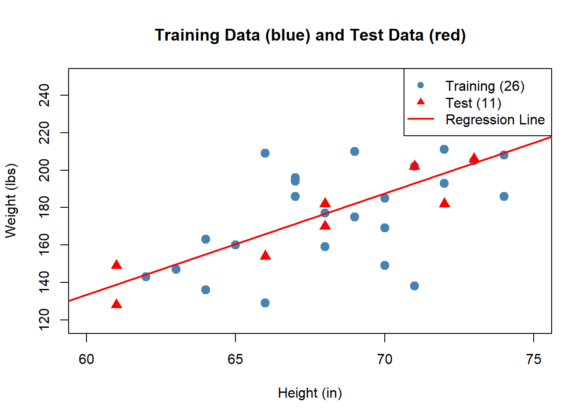
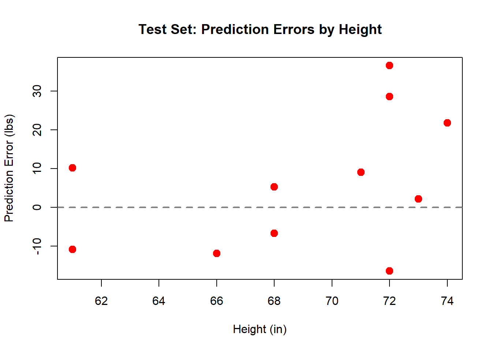

Linear Regression II
MA153X Mathematical Modeling — Lesson 9
Lesson 9: Linear Regression II
NoteDownloads
Objectives
- Interpret the slope and intercept of a linear regression model in context. (covered in Lesson 8)
- Interpret \(R^2\) for a linear regression model built on training data. (covered in Lesson 8)
- Use a linear regression model to generate and interpret out-of-sample predictions.
- Validate a linear regression model by comparing training and test data performance.
- Use out-of-sample prediction results to support or question a predictive modeling decision.
Review: Our Model from Lesson 8
In Lesson 8, we built a linear regression model using all 37 soldiers:
\[\hat{y} = -233.2 + 6 \cdot x\]
with \(R^2 = 0.532\). The slope tells us each additional inch of height predicts about 6 more lbs.
But how do we know this model actually works? We fit it to all of our data — so of course it fits that data reasonably well. The real question is: can it predict well for soldiers it has never seen?
The Problem: You Can’t Grade Your Own Test
When we use all the data to build the model and then check how well it fits that same data, we’re essentially grading our own test. The model has already “seen” every observation — so a good fit on this data doesn’t tell us much about how it will perform on new data.
This is why we need a training set and a test set.
ImportantTraining and Test Sets
- Training set: The data we use to build the model (estimate \(\hat{\beta}_0\) and \(\hat{\beta}_1\)).
- Test set: Data we hold out and use only to evaluate the model’s predictions on observations it has never seen.
If the model predicts well on the test set, we have evidence it generalizes — it captures a real pattern, not just noise in the training data.
Splitting the Data
Let’s take our 37 soldiers and split them: the first 26 soldiers for training, the remaining 11 for testing.

Now we rebuild the model using only the training data:
\[\hat{y} = -191.3 + 5.4 \cdot x\]
Notice the coefficients are different from Lesson 8 (\(\hat{\beta}_0 = -233.2\), \(\hat{\beta}_1 = 6\)). That’s expected — we’re now using fewer observations to estimate the line.
Making Predictions
Now we can use our training model to predict weight for any soldier — including the 11 test soldiers the model has never seen. Just plug in the height:
NoteExample Prediction
Take the first soldier in the test set — S027, who is 68 inches tall. The model has never seen this soldier. What does it predict?
\[\hat{y} = -191.3 + 5.4 \times 68 = 176.7 \text{ lbs}\]
S027 actually weighs 170 lbs, so our error is \(170 - 176.7 = -6.7\) lbs.
We can do this for every test soldier. For each one, we also compute the error — how far off our prediction was:
\[\text{Error} = \text{Actual Weight} - \text{Predicted Weight}\]
| Soldier | Height (in) | Actual (lbs) | Predicted (lbs) | Error | |Error| |
|---|---|---|---|---|---|
| S027 | 68 | 170 | 176.7 | -6.7 | 6.7 |
| S028 | 71 | 202 | 192.9 | 9.1 | 9.1 |
| S029 | 73 | 206 | 203.8 | 2.2 | 2.2 |
| S030 | 61 | 128 | 138.8 | -10.8 | 10.8 |
| S031 | 61 | 149 | 138.8 | 10.2 | 10.2 |
| S032 | 72 | 235 | 198.4 | 36.6 | 36.6 |
| S033 | 74 | 231 | 209.2 | 21.8 | 21.8 |
| S034 | 68 | 182 | 176.7 | 5.3 | 5.3 |
| S035 | 72 | 227 | 198.4 | 28.6 | 28.6 |
| S036 | 72 | 182 | 198.4 | -16.4 | 16.4 |
| S037 | 66 | 154 | 165.9 | -11.9 | 11.9 |
- A positive error means we underpredicted (soldier weighs more than expected).
- A negative error means we overpredicted (soldier weighs less than expected).
Validating the Model
To summarize overall prediction quality with a single number, we use the Mean Absolute Error (MAE):
\[\text{MAE} = \frac{1}{n}\sum_{i=1}^{n} |y_i - \hat{y}_i|\]
We compute MAE separately for the training set and the test set, then compare:
ImportantModel Validation
| Metric | Training (26 soldiers) | Test (11 soldiers) |
|---|---|---|
| MAE | 17.6 lbs | 14.5 lbs |
- If test MAE is close to training MAE, the model generalizes well — it captures a real pattern that holds for new data.
- If test MAE is much larger than training MAE, the model may be overfitting — it memorized the training data but doesn’t predict well for new observations.

If the errors look random and centered around zero, that’s a good sign. If there’s a pattern, we may need a different model. We’ll dig into this in Lesson 10 with residual analysis.
Supporting or Questioning the Model
Now we have all the pieces to make a judgment: is this model good enough to use?
TipQuestions to Ask (Reading 2.2, Section 9)
- Is the MAE acceptable for the context? An average error of 14.5 lbs — is that useful for whatever decision we’re making?
- Does the model generalize? Training MAE (17.6) vs. test MAE (14.5) — are they in the same ballpark?
- Are the predictions practically reasonable? Do the predicted weights make sense for real soldiers?
- Would you trust this model to inform a real decision? If a commander used this model to estimate equipment needs, would the errors be acceptable?
Now Let’s Do It in Excel
Open the L9 - Validate tab in the workbook:
The data is already split for you: Train (26 soldiers) and Test (11 soldiers), separated by a blank row.
NoteStep 1: Build the Model on Training Data Only
Use =SLOPE() and =INTERCEPT() on only the training rows to get your slope and intercept. The hint formulas in columns K–L show you how.
Your coefficients should be different from Lesson 8 — that’s expected because you’re now using only 26 soldiers instead of all 37.
NoteStep 2: Make Predictions for All Soldiers
In the Predicted (lbs) column, compute \(\hat{y}\) for each soldier (both training and test):
= intercept_cell + slope_cell * height_cellDrag this formula down for all rows.
NoteStep 3: Compute Errors
- Error column:
= Actual - Predicted - |Error| column:
= ABS(Error)
NoteStep 4: Compute MAE
Compute MAE separately for the training rows and the test rows:
= AVERAGE(|Error| range for training)
= AVERAGE(|Error| range for test)Compare the two values. Are they in the same ballpark?
NoteStep 5: Make a Judgment
Look at your results and answer:
- Is the test MAE close to the training MAE?
- Is an average error of ~15 lbs acceptable for predicting soldier weight?
- Would you recommend this model to a commander? Why or why not?
Summary
ImportantKey Takeaways
- Building a model on all the data and checking fit on that same data is like grading your own test — it doesn’t tell you how the model performs on new data.
- Split the data into training (to build) and test (to evaluate).
- Use the regression equation to make predictions by plugging in new \(x\) values.
- MAE summarizes prediction accuracy: the average absolute distance between actual and predicted values.
- Compare training and test MAE to check whether the model generalizes or overfits.
- Use prediction results to support or question your modeling decision — is the model good enough for the task at hand?